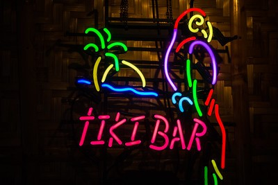

Aloha, Tiki Lovers
Welcome to the world of tropical scenery, Hawaiian shirts, mini umbrellas, and good vibes. This whimsical world has been an American staple and avenue for escapism since the early 20th century, and it has no signs of going anywhere. A personal passion of mine, I am excited to share with you more information about tiki's: history; including where it got its start and where it stands today, essentials; highlighting the classic drinks you will find at tiki bars, and future; showing how tiki culture is changing, modernizing and diversifying with new bars and cocktail masters. Tiki culture is more than just rum drinks and Exotica music, though. Tiki is also a way of being and learning how to slow down from the bustle of everyday life and live in the moment.
I hope you enjoy this site. Some of my favorite memories with friends and family revolve around tiki. Wherever I'm living, I make a point to find the nearest tiki bar so I always know where to go when I'm looking for a fun, relaxing time. Something that has been so meaningful to me, it is important to acknowledge the bad as well as the good that surrounds tiki culture. Apart from learning about its history and essentials, this site reviews the complicated history surrounding tiki and its appropriation of Polynesian, Hawaiian and other cultures. So, I hope you enjoy this site. It is made for both those new and old to the world of tiki. Whatever your familiarity, there is something for everyone.